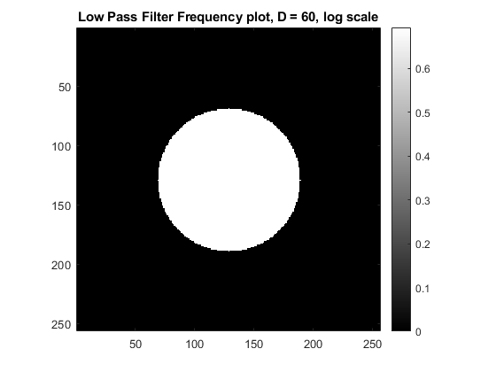
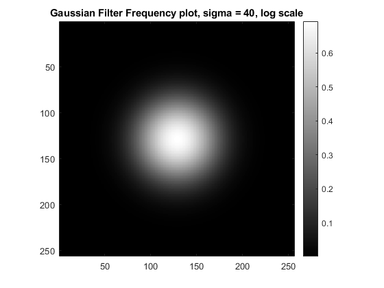
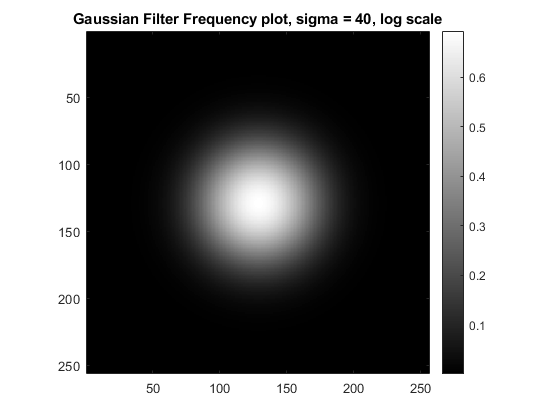

Contents
Q4
References used for this problem:
1) https://in.mathworks.com/help/matlab/ref/fftshift.html
2) https://in.mathworks.com/help/matlab/ref/fft2.html
3) https://in.mathworks.com/help/matlab/ref/ifft2.html
4) https://in.mathworks.com/help/matlab/ref/ifftshift.html
5) https://in.mathworks.com/help/images/ref/padarray.html
a) Ideal Low Pass Filter
D was taken to be 40, 60, 80
We observe that, even though high frequency information is removed, the amount of ringing in the image has increased, and thus the image is not very pleasant to look at. Thus, this is clearly undesirable.

b) Gaussian Filter
Sigma was taken to be 40, 60, 80
Not much ringing is observed. There is smoothening of the image and blurring of the edges as in the previous attempt, and you can see some high frequency components in the face region and elsewhere, which were removed in the previous part.
 
 
Elapsed time is 8.055890 seconds.